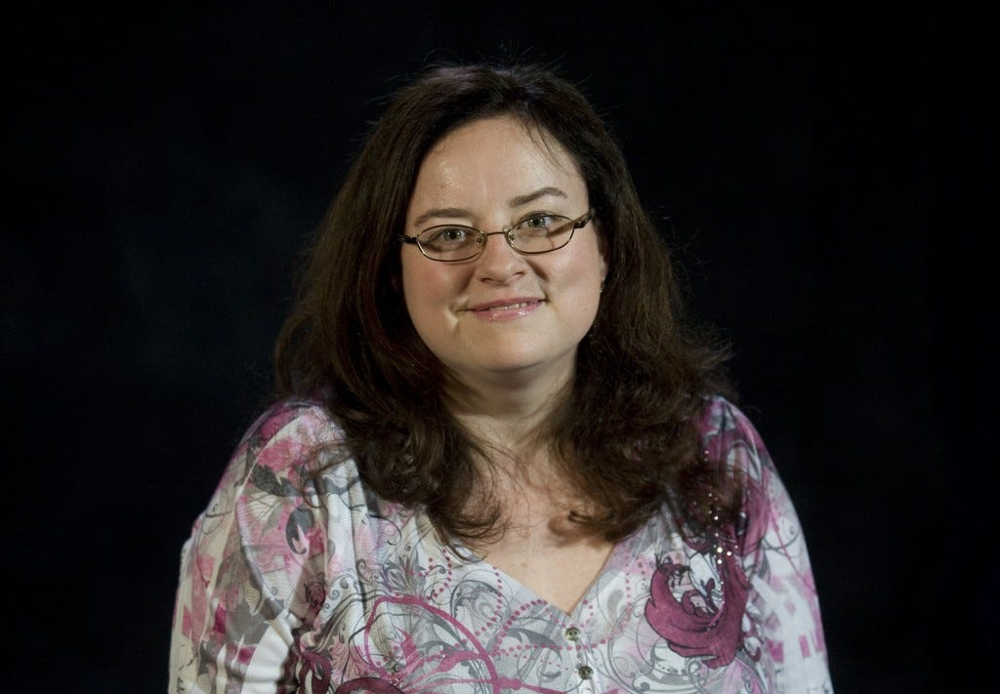

Like Misty, professionals say the tech-enabled features they need
An example of a User Experiences and Features discovery method


Users very often tell the feature they need when using an application naturally doing their jobs. User screening is not about bringing potentials users into a lab and seeing them use your tech-enabled products or services but getting insight from them while they are using it in their own context. I think this is also said by professional UX specialists like steve Krug who I have read from.
That’s the example that Misty Davies gave with this video bellow
because while discussing airline safety with her peers and sharing it with us for the sake of learning she pointed at the same time a needed feature of the platform she was using for online conferencing. She promptly said that it was unfortunate for us because we cannot click on the link she provided because the slide she was showing us was streamed in video probably with Zoom conference applications. I am not sure of the platform but here is the screenshot
Misty Davies is completely right Conference applications like that should could, and must stream the real slide so we viewers can directly copy the content, click on a link in it or do whatever we want with it. But most conferencing platforms are just presenting to us the video of the slides.
Then Misty highlighted to you a feature or an entire conferencing platform to build one that will present a slide that allows these CRUD operations.
I think that no team conferencing platform allows this feature but if there is that do then please let me know and learn.
Also, you should make such that names of the speakers will always be easily printer over their video box because I have spent a lot of time finding the name of Misty who is a professional knowledge person that a learner like me and probably you could easily find and connects with her work.
Finally, I knew that Mistie works for NASA and she is a PhD and a new Mom.
https://www.youtube.com/watch?v=rbnZYYN7p8A
I hope and wish the best to Misty a successful career and a happy parenting experience because these two are as important as User Experience which is the topic of this article that also could be seen as an article of the Greyio Heart Experiment a publishing experiment that aims to highlight the work of women mainly software engineers.
More about the Greyio Heart Experiment here
PS: Watch users in video platforms like youtube and you will get a lot of ideas of tech-enabled features to build into your platform or as a standalone platform.